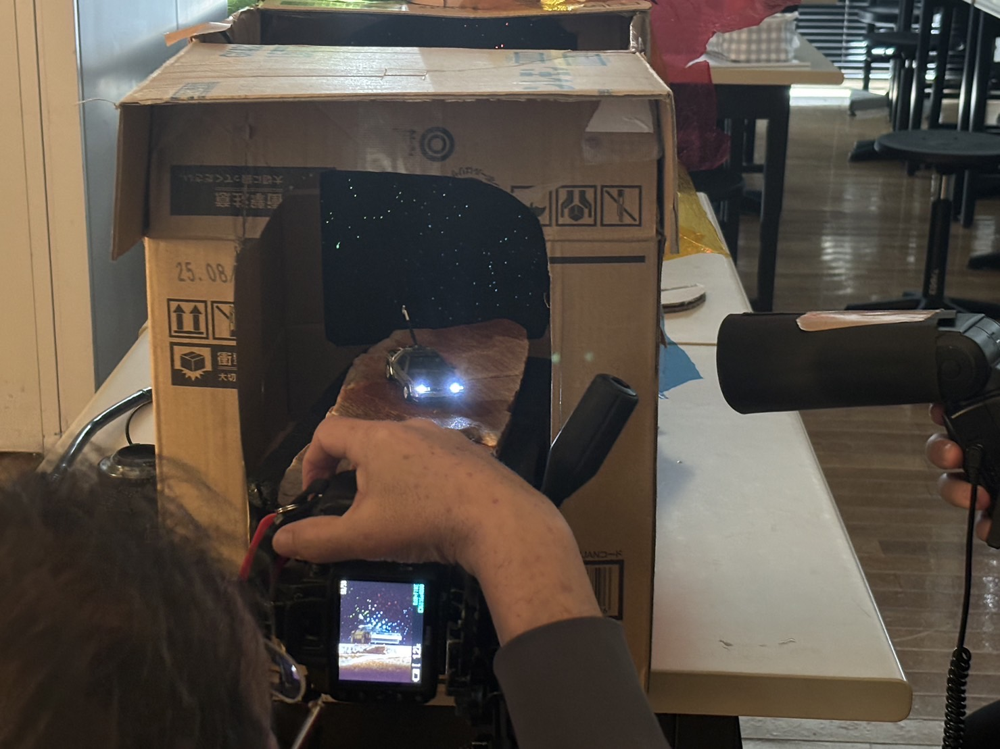

こちらは青空を作るためのスタジオ。青の画用紙を背景に太陽を表すライトを画用紙側に1つ設置する。次にもう1つのライトを撮影する被写体に当てる。あとは撮影者が位置の指示やピントなどの作業をして撮影。
こちらは夕方を作るためのスタジオ。オレンジに変えた画用紙を背景に夕日を表すライトを画用紙側に1つ設置する。次にもう1つのライトを撮影する被写体に当てる。あとは撮影者が位置の指示やピントなどの作業をして撮影。この時、当て方によっては夕日ではなく、戦闘や血をイメージさせることもできる。
こちらは浅くて大きめの容器に水を入れてそこに被写体を置いて撮影するためのスタジオ。被写体を置き後ろには布で隠したライトで全体を明るくし、もう１つのライトは被写体に当てる。ピントやライトの位置の調整が終わったら後ろからドライヤーで風を送って水が波打感じにして撮影。この時、ドライアイスで霧や湯気を表現したり、被写体によって背景の色を変えてみるのも面白い。
こちらは大きめの容器に水を入れ、そこに被写体を落として撮影するためのスタジオ。大きめの容器に水を入れ、背景は黒の画用紙、ライトを2つ使い1つ目は横から当て、もう1つは上から当てるように設置する。この時、カメラのピントは被写体を水の中に落として途中で止まる所やここで撮りたいと思った所に被写体を持ってきてピントを合わせる。準備が終わったら被写体を落としてタイミングよくシャッターを切って撮影。被写体や物のロゴが正面になるように落とすのはとても苦労した。それとライト2色をつけてみるのも面白い。

こちらはダンボールを使って暗い場所にいるような撮影をするためのスタジオ。ダンボールの正面(カメラから除く用)、左右(霧やライトを当てる用)上の一部(霧を充満させない為)に穴を開ける。奥側には小さな穴がいくつも開けており、そこにライトを設置する。あとは撮影者が位置の指示やピントなどの作業をして撮影。